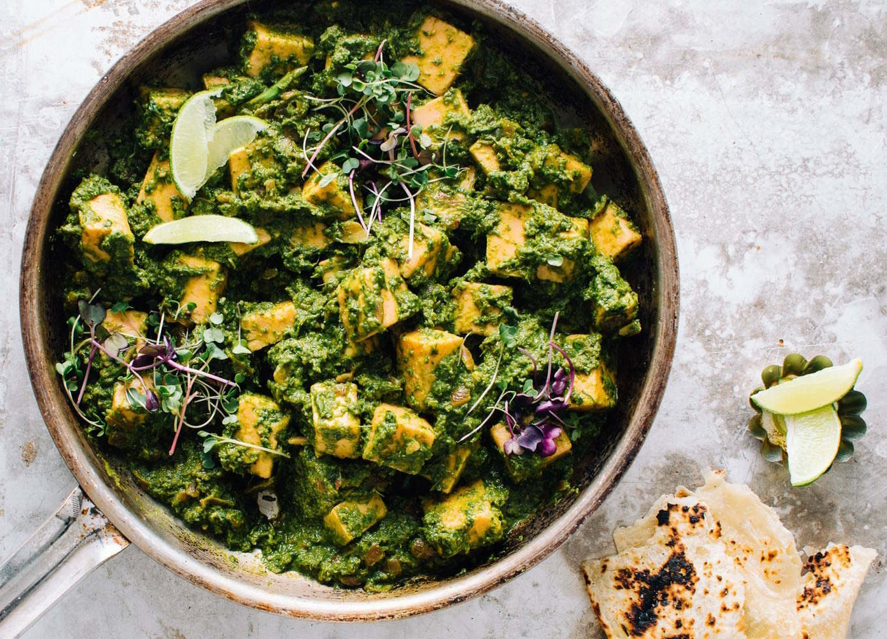

приготовление:
-
Вымыть 500 г baby-картофеля, нарезать кусочками размером на один укус (bite-size) и отварить в подсоленной воде около 15 минут.
-
Залить 160 г шпината кипятком на несколько минут. Затем переложить в холодную, лучше ледяную воду, чтобы сохранить яркий цвет.
-
Очистить и крупно нарезать 125 г репчатого лука, 75 г помидора, 7–8 зубчиков чеснока, 10 г имбиря и зелёный чили — овощи позже будут измельчаться. Разогреть сковороду с растительным маслом, выложить овощи и обжаривать под крышкой около 2 минут. Снять с огня и немного остудить. Измельчить зажарку со шпинатом и 2 ст. л. воды в блендере до консистенции густой сметаны.
-
Разогреть сковороду с растительным маслом на среднем огне. Нарезать 226 г панира примерно на 15 кусочков и обжарить с двух сторон до румяной корочки. Снять панир со сковороды.
-
Выложить на ту же сковороду шпинатную массу и готовить на слабом огне, помешивая, несколько минут. Добавить 50 мл сливок 20% и увеличить огонь до среднего. Всыпать по 1 ч. л. соли и порошка чили, а также по ½ ч. л. молотого кориандра, гарам масалы, семян кумина и куркумы. Перемешать, уменьшить огонь, накрыть крышкой и тушить около 6 минут, пока масло не начнёт отделяться по краям. Вернуть панир на сковороду и готовить под крышкой ещё несколько минут. Добавить несколько кусочков сливочного масла и оставшиеся 25 мл сливок 20%.
-
Добавить в сковороду отваренный baby-картофель и аккуратно всё перемешать, чтобы картошка и панир равномерно покрылись шпинатным соусом.